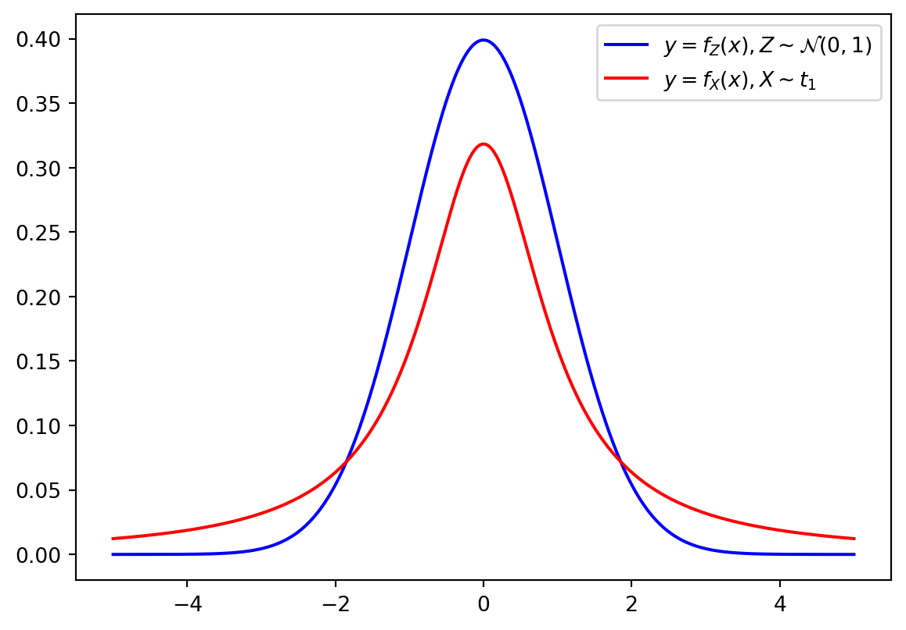

Lab 6 - Solutions
1 \(z\)-tests (when we know something about the distribution of the data)
Overview of the theory
As you know from the Lecture Notes, we use \(z\)-tests if we either know that the data is distributed normally or if the sample is large enough so we may assume that its averaged value is distributed normally according to the central limit theorem (which we will discuss next week). Note that, to use \(z\)-tests, we have to know the variance of the distribution.
Recall the main quantities we may need:
1. Test statistic
E.g. in the case of one sample, it’s
\[ z=\frac{\bar{x}-\mu}{\dfrac{\sigma}{\sqrt{n}}} \tag{1}\]
This works e.g. for the estimation of \(\mu\) of \(n\) observations from \(\mathcal{N}(\mu, \sigma^2)\) (when \(\sigma^2\) is known); and this also works for large samples.
2. \(p\)-value
Informally speaking, \(p\)-value describes the area of the “tail” of distribution bounded by the test statistic. On the diagram below, the tails are shaded in pink. Recall that \(\varphi(z)=f_Z(z)\) is the PDF of the standard normal distribution, where \(Z\sim \mathcal{N}(0,1)\). The pink areas are then related to the CDF \(\Phi_Z\) of \(Z\sim \mathcal{N}(0,1)\), namely:
If the test statistic \(z<0\), then the area of the tail left to the \(z\) is \(\Phi(z)=F_Z(z)\).
If the test statistic \(z>0\), then the area of the tail right to the \(z\) is \(1-\Phi(z)=1-F_Z(z)\).
If we consider the two-tailed case (e.g. the alternative hypothesis \(H_1\) is \(\mu\neq\mu_0\)), then \(p\)-value is the sum of the tail pink areas (i.e. \(p\) is twice bigger than each of them).
If we consider the one-tailed case (e.g. \(H_1\) is \(\mu<\mu_0\) or \(H_1\) is \(\mu>\mu_0\)), the \(p\)-value is either of the (equal) tail pink areas.
3. Significance level \(\alpha\in(0,1)\)
We reject the null-hypothesis \(H_0\) if \(p\leq \alpha\).
We do not reject the null-hypothesis \(H_0\) if \(p>\alpha\).
4. \(z\)-score, denoted \(z_\mathrm{score}\)
\(z\)-scores provide another approach to test the hypothesis (i.e. practically we calculate either \(p\)-value or \(z\)-score).
In simple words, \(z_\mathrm{score}\) is the number such that its \(p\)-value would be \(\alpha\). Therefore, to find \(z_\mathrm{score}\), we would use the inverse function to \(\Phi\), i.e. the percentile (see Lab 5). We will choose \(z_\mathrm{score}\) so that its sign is the same as it is for the test statistic.
We reject \(H_0\), if the test statistic \(z\) is inside the critical region constructed by \(z_\mathrm{score}\) (the pink area), i.e. if \(z>z_\mathrm{score}>0\) or if \(z<z_\mathrm{score}<0\).
We do note reject \(H_0\) otherwise.
Example 1
Consider an example from the Lecture notes.
A machine produces items having a nominal mass of \(1\) kg. The mass of a randomly selected item \(x\) follows the distribution \(X\sim \mathcal{N}(\mu, 0.02^2)\). If \(\mu\neq 1\) then the machinery should be corrected. The mean mass of a randomly sample of \(25\) items was found to be \(0.989\) kg. Test the null hypothesis that \(H_0:\mu=1\) at the \(1\%\) significance level.
Note that the alternative hypothesis here is \(\mu\neq1\), i.e. we deal with the two-tailed test.
We have
mu = 1
sigma = 0.02
n = 25
xbar = 0.989
alpha = 0.01and we can calculate the test statistic. Recall that, for the square root function we need either use an additional module, e.g. import numpy as np and then np.sqrt(n) (this is reasonable in the case we use numpy also for some other purposes) or we just use that \(\sqrt{n}=n^{\frac12}\), namely, we write by Equation 1,
z = (xbar - mu) / (sigma / (n ** 0.5))
z-2.750000000000002Since the test statistic is negative, to calculate the \(p\)-value we consider the \(\Phi(z)\), and since this is the two-tailed case, we have that \(p=2\Phi(z)\). Namely, we calculate
from scipy.stats import norm
p = 2 * norm.cdf(z)
p0.0059595264701090694Since \(p < \alpha = 0.01\), i.e. the significance of the \(p\)-value is below the significance level, we reject \(H_0\).
Alternatively, we can use the \(z\)-score approach (that is exactly what you use doing calculations by hand and using the statistical tables), we need to use norm.ppf function (discussed on Lab 5); since this is the two-tailed case, we calculate it at \(\frac{\alpha}2\), that is then the area of the left pink tail on Figure 2, as we need to choose the negative \(z_\mathrm{score}\):
zscore = norm.ppf(alpha/2)
zscore-2.575829303548901Since \(z<z_\mathrm{score}\), i.e. the test statistic is inside the critical (left tail, left pink) region, we reject \(H_0\).
Example 2
The number of strokes a golfer takes to complete a round of golf has mean \(84.1\) and standard deviation \(2.6\). After a month of holidays without playing golf her mean is now \(85.1\) in \(36\) subsequent rounds. At the \(5\%\) significance level test the null hypothesis that her standard of play is unaltered against the alternative hypothesis that it became worse, i.e.
\(H_0: \mu=84.1\)
\(H_1: \mu>84.1\) (one-tailed)
1.1
Calculate the test statistic and assign it to z.
Code
mu = 84.1
sigma = 2.6
n = 36
xbar = 85.1
alpha = 0.05
z = (xbar - mu) / (sigma / (n ** 0.5))Check the answer:
z2.30769230769230751.2
Calculate the \(p\)-value, taking into account that \(z>0\) and we test the one-tailed case.
Code
p = 1 - norm.cdf(z)Check the answer:
p0.01050812811375934Since \(p<0.05=\alpha\), we reject \(H_0\).
1.3
Alternatively, calculate the \(z\)-score correspondent to the considered significance level (and assign it to zscore). Note that we are going to compare the \(z\)-score with the test statistic, hence, we will be looking for the positive \(z\)-score (as the test statistic is positive).
Code
zscore = norm.ppf(1-0.05)Check the answer:
zscore1.6448536269514722Since \(0<z_\mathrm{score}<z\), we have that the test statistic is inside the critical (tail) region, and we will reject \(H_0\).
2 \(t\)-tests (when we do not know much about the data)
Usually, we have just the data (e.g. one or two samples). We may expect that the data is normally distributed (and there are some statistical tests to verify this — though, we will not consider them now), but we don’t know exactly e.g. the standard deviation of that distribution. Hence we need to guess that standard deviation from the sample standard deviation. This guess leads to errors. To take these potential errors into account, \(t\)-tests are used.
\(t\)-tests are quite similar to \(z\)-tests with two main differences:
- Test statistic (denoted \(t\) in the Lecture Notes) is calculated with the sample standard deviation \(s\) (as we don’t know the population standard deviation \(\sigma\)). E.g. in one-sample test we take
\[ t=\frac{\bar{x}-\mu}{\dfrac{s}{\sqrt{n}}} \tag{2}\]
- \(p\)-value and \(t\)-score are calculated for \(t\)-distribution, instead of the standard normal distribution. The work with \(t\)-distribution in Python is similar to any other distribution:
from scipy.stats import tand then you can used t.cdf(x, df) or t.pdf(x, df) or t.ppf(q, df), where df is the degree of freedoms. Before considering an example, we note that the name of the class for this distribution is just t, hence, YOU SHOULD NOT USE t variable for the test statistic. We will use e.g. tstat instead.
2.1
Download file Heights.csv from Canvas Week 6, upload it to Anaconda cloud, and load its content to Pandas data frame df_heights (see Lab 3 if you don’t remember how to do this).
Code
import pandas as pd
df_heights = pd.read_csv('Heights.csv')Check the first rows to see the structure:
df_heights.head()| HEIGHTS | |
|---|---|
| 0 | 6.50 |
| 1 | 6.25 |
| 2 | 6.33 |
| 3 | 6.50 |
| 4 | 6.42 |
We assume that it is known that this sample of heights has normal distribution.
2.2
Assign the values of the only column of this data frame to Numpy array x. Assign to n the size of the sample, i.e. the length of x using function len.
Code
x = df_heights['HEIGHTS'].to_numpy()
n = len(x)Check the answer:
n65Recall that, to calculate the sample standard deviation \(s\) (that has \(n-1\) in the denominator), we need to use the key ddof = 1, e.g.
import numpy as np
a = np.array([1,2,3])
np.std(a, ddof = 1)1.0Note that we can also write
a.std(ddof = 1)1.0i.e. instead of applying function np.std to a we can use the property (method) std of the Numpy-array a. The same trick works for other statistical characteristics, e.g. a.mean() and np.mean(a) give the same.
2.3
Assign to xbar the mean of x. Assign to s the sample standard deviation of x.
Code
xbar = x.mean() # Or xbar = np.mean(x)
s = x.std(ddof = 1)Check the answers:
[xbar, s][6.467692323784616, 0.3302970630589082]2.4
We are going to use a one-sample \(t\)-test to determine whether the heights in the data frame has a mean of \(\mu = 6.5\). Assign to tstat the corresponding test statistic, using Equation 2.
Code
mu = 6.5
tstat = (xbar - mu) / (s / np.sqrt(n)) # As numpy is anyway in use, or keep n ** 0.5 insteadCheck the answer
tstat-0.7886016620455049Here \(H_0: \mu=6.5\) and \(H_1: \mu\neq 6.5\), i.e. we deal with the two-tailed test.
We can calculate \(p\)-value, recall that for the one-sample test we should take \(t\)-distribution with \(n-1\) degrees of freedom. Since the test statistic is negative, we have
p = 2 * t.cdf(tstat, df = n-1)
p0.433256350170654Therefore, if we consider any significance level below this \(p\): e.g. \(5\%=0.05\), then we do not have any evidence to reject \(H_0\).
Alternatively, we calculate the \(t\)-score corresponding to the chosen significance level, e.g. \(\alpha = 0.05\). Since this is two-tailed test, we calculate the percentile at \(\frac{\alpha}{2}\):
tscore = t.ppf(0.05/2, df = n-1)
tscore-1.9977296536259739Since (the negative) \(t\)-score is smaller than (the negative) \(t\)-statistic, the latter lies outside of the critical interval, and again, we can’t reject \(H_0\).
Apparently, scipy.stats module proposes a faster way to calculate both the test statistic and the \(p\)-value for the \(1\)-sample \(t\)-test:
from scipy.stats import ttest_1samp
mu = 6.5 # If you haven't assign it before
ttest_1samp(x, mu)Ttest_1sampResult(statistic=-0.7886016620455049, pvalue=0.433256350170654)Surely the answers are the same as we found previously. They are also accessible directly:
results = ttest_1samp(x, mu)
results.pvalue0.433256350170654(and similarly for results.statistic).
2.5
Download the file HealthData.csv from Canvas Week 6, upload it to Anaconda.cloud, and consider the column DENSITY. Use a one-sample \(t\)-test to determine whether the density variable in the data set Health Data has a mean of \(1.051\) using the \(5\)% significance level. Assign the corresponding \(p\)-value to p (you may use either of the considered approaches).
Code
df_health = pd.read_csv('HealthData.csv')
x = df_health['DENSITY']
mu = 1.051
results = ttest_1samp(x, mu)
p = results.pvalueCheck the answer:
p0.00017145125375254356As you can see \(p\)-value is less than the significance level: surely, you check this in Python :-)
p < 0.05TrueHence, we reject the null-hypothesis that \(\mu=1.051\).
Two-sample test
We consider now examples of two-sample tests.
First, we will use a paired \(t\)-test to determine whether there is any difference in the two processes (Process A and Process B) of preserving meat joints. This data can be found in MeatJoints.csv file (Canvas Week 6), and we will test at the 5% significance level whether the means of the two processes are equal.
So, we have \(H_0: \mu_A=\mu_B\) and \(H_1: \mu_A\neq \mu_B\).
2.6
Load the the data to Anaconda.cloud, and assign to \(a\) the column Process A and to \(b\) the column Process B.
Code
df_meat = pd.read_csv('MeatJoints.csv')
a = df_meat['Process A'].to_numpy()
b = df_meat['Process B'].to_numpy() Then use the following command to apply two-sample test
from scipy.stats import ttest_rel
results = ttest_rel(a,b)
resultsTtest_relResult(statistic=-2.29517764444372, pvalue=0.047371692861499864)Since
results.pvalue < 0.05Truewe reject \(H_0\).
3 If you have time
Next, we consider an unpaired test on the dataset SportHeights.csv (also available in Canvas Week 6). We will use an unpaired \(t\)-test at the 5% significance level to determine whether there is a difference in the mean height between basketball and football players.
3.1
Load the file to Anaconda.cloud and assign to f the heights of football players and to b the heights of basketball players.
Code
df_sport = pd.read_csv('SportHeights.csv')
f = df_sport['football'].to_numpy()
b = df_sport['basketball'].to_numpy() Then perform the following test:
from scipy.stats import ttest_ind
results = ttest_ind(f, b, nan_policy='omit')
resultsTtest_indResult(statistic=-3.684107948156318, pvalue=0.00040777606606915177)Note the key nan_policy='omit' as b and f have different sizes here.
Since
results.pvalue < 0.05Truewe reject the null hypothesis that the mean heights of basketball and football players are equal.
4 If you have more time
The PDF of \(t\)-distribution has heavier (“thicker”) tails than the standard normal distribution: the following picture compare PDFs for \(Z\sim \mathcal{N}(0,1)\) and \(X\sim t_1\) (the \(t\)-distribution with \(1\) degree of freedom).
from matplotlib import pyplot as plt
x = np.linspace(-5, 5, 1000)
plt.plot(x, norm.pdf(x), color = 'b', label = r'$y = f_Z(x), Z\sim \mathcal{N}(0,1)$')
plt.plot(x, t.pdf(x, df = 1), color = 'r', label = r'$y = f_X(x), X\sim t_1$')
plt.legend()
plt.show()
Recall that the chosen degree of freedom depends on the sample size. If degree of freedom is increasing, the \(t\)-distribution becomes closer to the `standard normal distribution:
x = np.linspace(-5, 5, 1000)
f = norm.pdf(x)
plt.plot(x, norm.pdf(x), color = 'b', label = r'$y = f_Z(x), Z\sim \mathcal{N}(0,1)$')
colors = ['r', 'y','g']
for i in range(3):
j = 3*i+1
plt.plot(x, t.pdf(x, df = j), color = colors[i], label = f'$y = f_X(x), X\sim t_{{{j}}}$')
plt.legend()
plt.show()